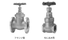

2024年
問題107 給水及び排水に関する用語とその説明との組合せとして，最も不適当なものは次のうちどれか．
（1）メカニカル形接合 ねじ込み，接着等による配管の接合方法
（2）毛細管現象 トラップのウェアに引っ掛かった糸くずや毛髪により，漸次封水が減少する現象
（3）着色障害 主として給水配管材料の腐食による生成物が水に溶解することにより起こる現象
（4）生物膜法 微生物が主要な構成要素となっている膜を利用して汚水を処理する方法
（5）DPD法 水道水の残留塩素を発色試薬を用いて簡易に測定する方法
2024年
問題107 正解（1） 頻出度AAA
メカニカル形接合とは，配管の接合方法のうち，ねじ込み，溶接，ろう接合などによらない機械的な接合方法．フランジ接合がその例（2024-107-1図参照）．

出典 株式会社キッツ 製品カタログより
https://www.kitz-valvesearch.com//upload/Files/material/04_Catalogs/01_pdf/J-101=62.pdf
-(2) 破封（封水が喪失しトラップで空気が流通してしまうこと）の原因2024-107-2図参照．

破封の原因と対策については次のとおり．
1．自己サイホン作用による破封の対策には各個通気を設置する．
2．誘導サイホン作用，はね出し作用による破封の対策は有効な通気をとること．
3．蒸発による封水損失は月20～25mmである．トイレなどの床排水口で起きる．対策としては，封水補給装置または栓をする．
4．毛管現象とは，トラップに付着した髪の毛，糸くずなどを伝わって封水が逃げてしまう現象．対策は排水口で毛髪などの流出を阻止する，頻繁な掃除を行うなど．
5．底面の勾配のゆるい水受け容器は排水の流速が小さいので自己サイホンを起こしにくい．また絞れ水が封水の補給水となる．
-(3) 給水の着色障害については，2024-107-1表参照．
2024-107-1表 給水の着色障害
| 着色 | 原因物質 |
| 黒い水 | マンガン |
| 青い水 | 銅イオンとせっけんの脂肪酸の化合物による． |
| 赤い水 | 亜鉛めっき鋼管が用いられている給水配管系で，亜鉛層の防食効果が失われ，素地の鉄が腐食し錆を伴って赤味を帯びるようになったものである．朝一番の水や，事務所ビルでは休日の翌朝に発生することが多い． |
| 白濁 | 亜鉛の溶出，空気の気泡，地下水中のカルシウム |
| ガラス容器の光る浮遊物 | 水中のマグネシウムとケイ酸の反応（フレークス現象） |
-(4) 浄化槽は，生物処理の方法によって生物膜法と活性汚泥法に大別される（2024-107-2表参照）．
2024-107-2表 主な生物膜法と活性汚泥法
| 生物膜法 | 汚水中の汚濁有機物質が，ろ材，回転板などの固形物の表面に生成した生物膜との接触によって分解除去される． | 担体流動法 |
| 回転板接触法 | ||
| 散水ろ床法 | ||
| 接触ばっ気法 | ||
| 活性汚泥法 | 槽内に浮遊する活性汚泥中の微生物が有機物を分解除去する． | 標準活性汚泥法 |
| 長時間ばっ気法 |
-(5) DPD法は残留塩素が発色試薬ジエチル-パラ-フェニレンジアミン（DPD）と反応して生じるセミキノン中間体の桃～桃赤色を標準比色液と比較して残留塩素値を決定する（2024-107-3図参照）．試薬に検水を加え混和した直後遊離残留塩素値を比色して求める．DPD法の発色にはpHを中性に保つリン酸塩が必要である．次いでヨウ化カリウムを加えて溶かし，約2分後再び比色して全残留塩素値を求める．全残留塩素値から遊離残留塩素値を引くと結合残留塩素値が求められる．

出典 柴田科学株式会社
https://www.sibata.co.jp/item/700/